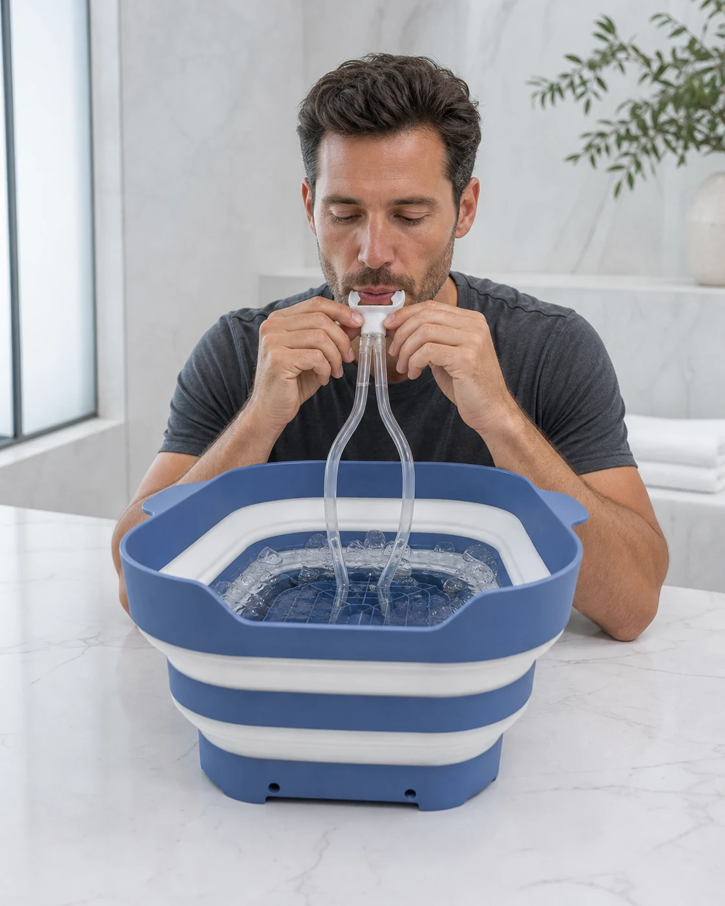
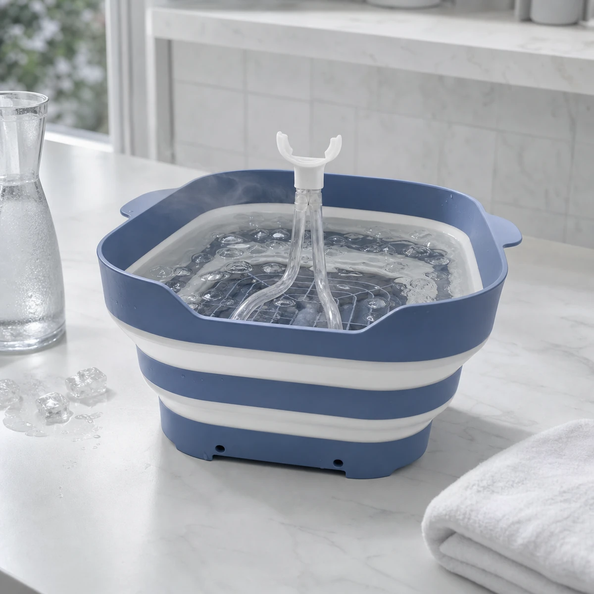
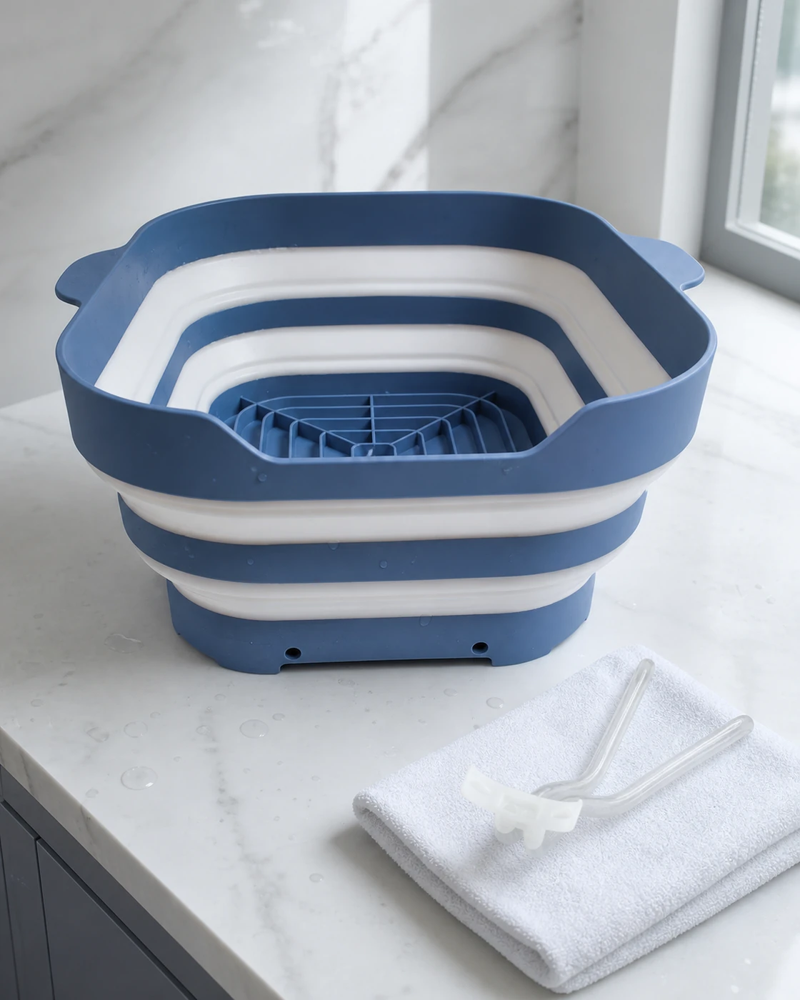
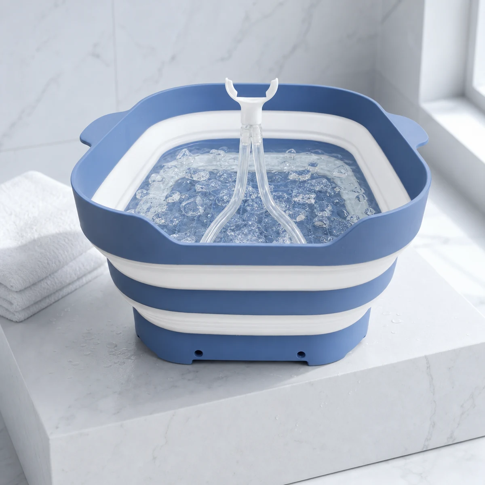

01
Settle into the breath
Position the tube comfortably and take a moment to establish an even rhythm before lowering your face.
Cold-water ritual at home
A considered facial bath for cold water, ice and steady breathing. Designed to make the ritual feel clear, contained and repeatable.

A quieter beginning
RX SUBZERO brings the water, ice and breathing setup into one dedicated object. Nothing theatrical, just a simple ritual that can fit into the start of your day.
Open the basin and add cold water and ice to your preference.
Begin with cool water and shorter intervals as you learn what feels right.
The integrated tube supports a steady breath while your face is in the water.
Rinse, air-dry and collapse the basin when the ritual is complete.
Your pace, your practice
The experience is intentionally simple: prepare the water, settle your breathing and approach the cold gradually.

Position the tube comfortably and take a moment to establish an even rhythm before lowering your face.

Empty the basin, rinse it and the breathing tube, then let both air-dry fully before storage.

The object behind the ritual
The steel-blue basin opens for use and folds down for storage. Its clear dual breathing tube and integrated blue base keep the setup contained in one purpose-built format.
The essentials
A straightforward look at setup, use and care.
The product format shown includes the collapsible basin and its clear dual breathing tube with white mouthpiece.
Start with cool water, a comfortable temperature and brief intervals. Add ice gradually only if it feels appropriate for you.
Empty after use, rinse the basin and breathing tube with mild soap and water, then let both air-dry fully before storing.
Cold exposure may not be appropriate for everyone. If you have a health condition, sensitivity or concern, speak with a qualified healthcare professional first.
RX SUBZERO
One dedicated format for water, ice and steady breathing, designed to live naturally in your routine.
Review the productUse cold gradually and always at your own comfort level.